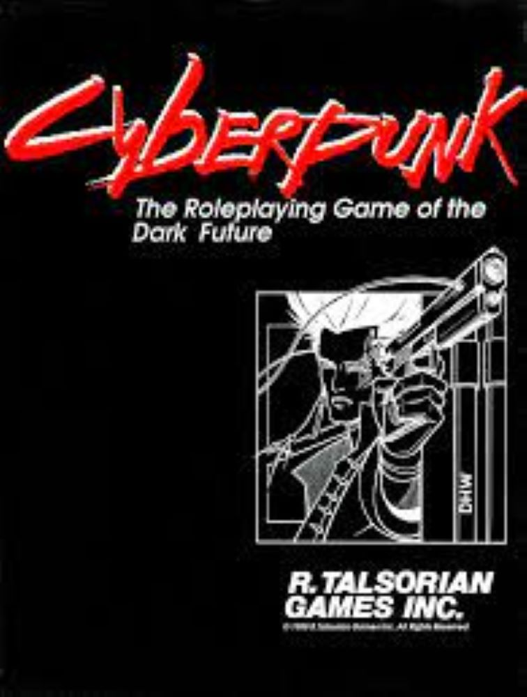
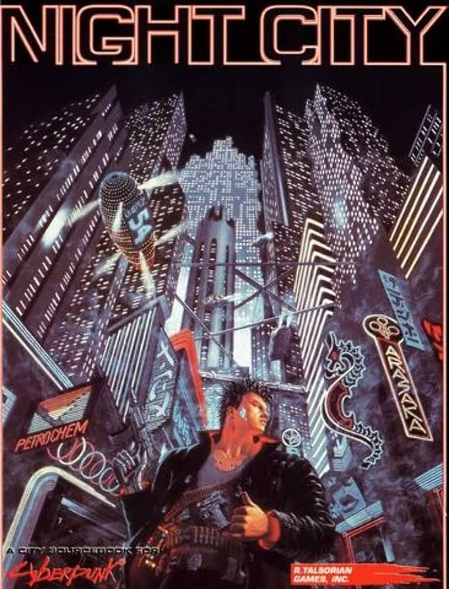
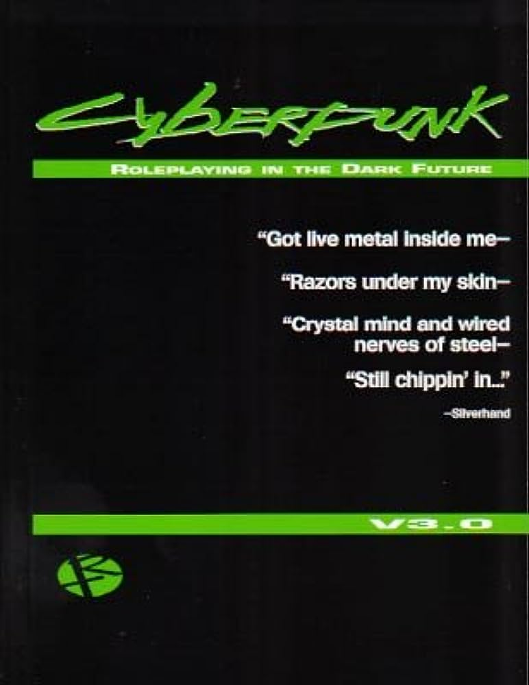
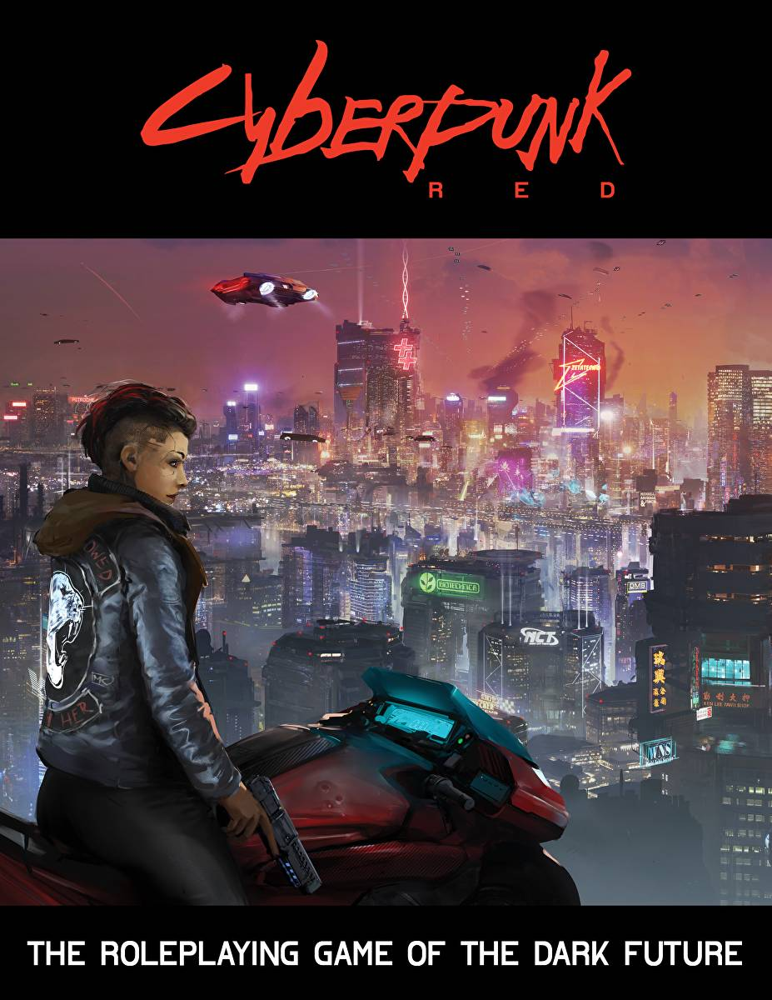
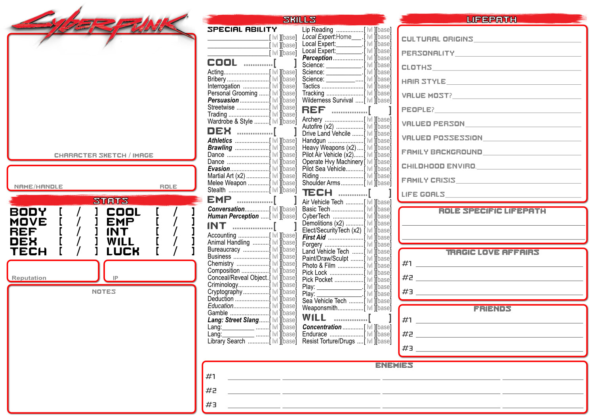
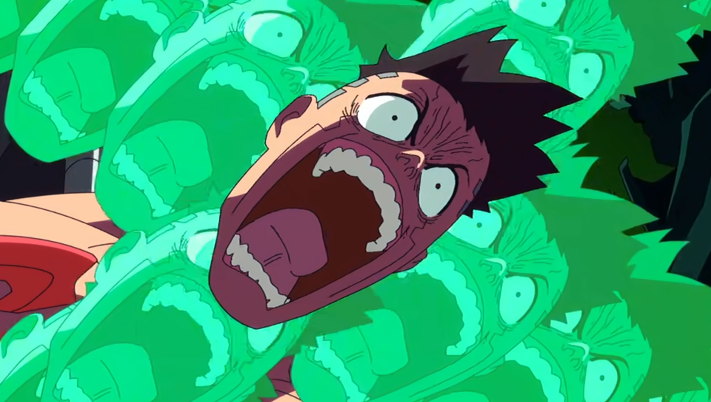

Written by Mike Pondsmith and first published by R.Talsoria Games in 1988, Cyberpunk,
the tabletop role-playing game has went through four editions till present day.




Click one of the icons to read more about the different editions.
Over the years, Cyberpunk has expanded largely past just being a tabletop roleplaying game,
turning itself into a multimedia franchise, branching out into different forms of entertainment,
like comics and novels and even an Anime adaptation.
There are three important components that make up a player's experience in Cyberpunk:

There are ten key roles the players can choose from, each with their own special abilities. These include musicians ('Rockerboys'), bodyguards and assassins ('Solos'),
hackers ('Netrunners'), road warriors ('Nomads'), street experts ('Fixers'), investigative journalists and reporters ('Medias'), mechanics ('Techs' or 'Techies'),
doctors ('Medtechs'), corporate executives ('Corpos'), and Police Officers.
A choice of rules are provided for character creation, either by assigning points to purchase skills or by rolling d10s for a more random outcome.
A system called Lifepath is provided to develop each character further, by generating goals, motivations, and events from their past
that may influence how the player reacts to certain situations or how the campaign world reacts to them.
Finally, they gain money, cyberware, weapons and other equipment, including fashion and lifestyle goods.
Further character upgrades are skill-based rather than level-based; for each successful play,
players are awarded points they can spend on improving their characters' skill sets.
The combat system is called Friday Night Firefight (FNFF), and emphasizes lethality.
Unlike role-playing systems where characters amass hit points as they progress, allowing them to survive higher amounts of combat damage,
the amount of damage a character can sustain in Cyberpunk does not generally increase as the character develops.
Each round, characters are permitted to take one move action and one other action.
There are rules governing the use of autofire, armor, and cover, including specific instructions for using people as shields.
Alternative ammunition types for weapons are available, for example a shotgun can be fired with buckshot instead of slugs.
Character skills can be used to improve both ranged and melee combat.
Additionally, there are rules covering other forms of damage such as
drowning and asphyxiation, electrocution, and being set on fire.

The acquisition of cyberware—cyberweapons, cyberoptics and other implants—carries a Humanity Cost.
Every ten points of Humanity Cost causes the loss of an Empathy point,
the character attribute that measures how well they relate to other people.
An Empathy level of zero represents a complete loss of humanity, a state known as cyberpsychosis;
in the case of players, their character becomes a non-player character controlled by the Gamemaster.